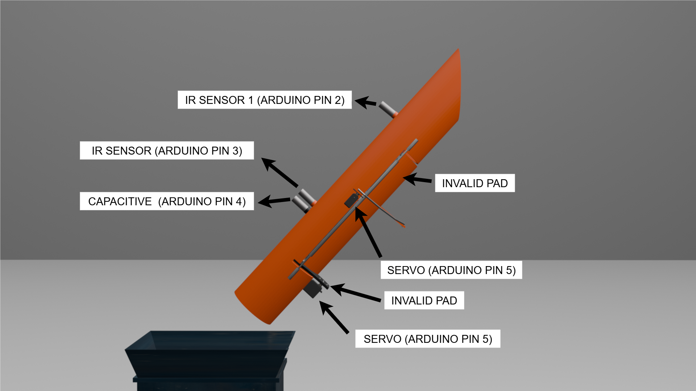

üìå Wiring Diagram (Arduino uno, ESP32, Sensors and Actuators)
Follow this wiring diagram carefully:

üìå Shredder wiring Diagram
PLEASE follow this wiring diagram carefully. Same Arduino just add this:
Step-by-step guide with wiring, code, 3D model, and components list
This prototype accepts valid plastic bottles in exchange for peso rewards; each valid bottle corresponds to one peso. When a user inserts a valid bottle, the system verifies and automatically shred using the shredder and displays both the total number of valid bottles accepted and the system’s remaining balance. If an invalid bottle is inserted, the system will reject it and direct it to the open bin, allowing the user to retrieve it. If no balance remains and a bottle is accidentally inserted, the system will return it to the user.
The administrator can access the web server by connecting to the ESP32’s Wi-Fi network (SSID: Baryabote, Password: Cristelkate). The web server stores all data, including the number of valid and invalid bottles processed and the amount of rewards dispensed. Through the web server, the administrator can also reset the system by replenishing it with 100 pesos in coins.
System Process:
When a person approaches the prototype, the system automatically plays a tutorial through the built-in MP3 player and speaker. While idle, the 16x2 LCD displays “Barya Bote” on the first line and “Insert Valid Bottle” on the second line. Once Push Button 1 is pressed, the system begins accepting input. The LCD then shows “Peso Balance” on the first line (the remaining balance in the system) and “Bottle Count” on the second line (the number of valid bottles inserted).
After inserting bottles, the user can press Push Button 2 to dispense pesos. Each press dispenses the reward amount, designed this way to avoid issues with the DIY peso dispenser. If the user has already dispensed their full reward and continues pressing Push Button 2, the system will no longer dispense pesos. To prevent cheating, a sensor is installed above the bottle input slot. If this sensor is blocked, the LCD will display “System Stop” on the first line and “Remove Obstacle” on the second line, halting operations until the obstruction is cleared.
➤ Arduino uno
➤ ESP32
➤ 5v power supply (for Arduino uno and Servo motor)
➤ 9v power supply (for capacitive sensor)
➤ MG996R Metal gear servo motor
➤ Capacitive sensor PNP type
➤ E18 D80NK ir sensor
➤ PIR Sensor
➤ 16x2 i2c LCD
➤ 1k, 2k, 1m ohms resistor
➤ MFP mini mp3 player
➤ Micro SD Card 4 to 32gb only
➤ 4ohm 3watts speaker
➤ 5v relay
➤ LY2NJ 220v relay
➤ SHREDDER
➤ MCB
Click below to watch the tutorial. After successfully formating you sd card to FAT32 upload your audio on the sd card and rename it "0001.mp3"
▶ Watch on YouTubeFollow this wiring diagram carefully:
PLEASE follow this wiring diagram carefully. Same Arduino just add this:
place your sesors and servo motors as shown
place your servo motors like this

This is just my most basic idea of sorting mechanisim, you can use another method.
The servo will turn 90 degrees idle position.
While in idle posotion scew your gate and sorter pad. Pads are those plain pad your servo motor is holding.
In #include "<" I remove this part on all libraries since the libraries disapear as i put complete the libraries. Just put "<" and its all good.
#include Servo.h>
Servo servoGate,servoSorter;
void setup() {
servoGate.attach(5);
servoSorter.attach(6);
delay(5000);
servoGate.write(90);
servoSorter.write(90);
}
void loop() {
}
Wait for 7 secs. The servo will imitate the system accepting and rejecting bottle. If no error like servo motor hiting something then proceed on uploading the full code below else dm me.
In #include "<" I remove this part on all libraries since the libraries disapear as i put complete the libraries. Just put "<" and its all good.
#include Servo.h>
Servo servoGate,servoSorter;
void setup() {
servoGate.attach(5);
servoSorter.attach(6);
delay(7000);
servoGate.write(90);
servoSorter.write(90);
delay(5000);
servoGate.write(90);
servoSorter.write(10);
delay(3000);
servoGate.write(160);
servoSorter.write(10);
delay(3000);
servoGate.write(90);
servoSorter.write(90);
delay(5000);
servoGate.write(90);
servoSorter.write(160);
delay(3000);
servoGate.write(160);
servoSorter.write(160);
delay(3000);
servoGate.write(90);
servoSorter.write(90);
}
void loop() {
}
Copy and upload this code into your Arduino:
In #include "<" I remove this part on all libraries since the libraries disapear as i put complete the libraries. Just put "<" and its all good.
#include Wire.h>
#include LiquidCrystal_I2C.h>
#include Servo.h>
#include SoftwareSerial.h>
LiquidCrystal_I2C lcd(0x27, 16, 2);
const int ir1 = 2;
const int ir2 = 3;
const int cap = 4;
const int relay = 12;
const int button1 = A1;
const int button2 = A2;
const int button3 = A3;
const int pir = 7;
const int speaker = 8;
unsigned long speakerStart = 0;
bool speakerOn = false;
bool PIRwasTriggered = false;
const unsigned long onDuration = 1000UL;
const unsigned long offDuration = 10000UL;
Servo servoGate, servoSorter, servoDispenser;
unsigned long highStart = 0;
bool obstacleMode = false;
const unsigned long OBSTACLE_DELAY = 2000;
unsigned long previousObstacles = 0;
const long intervalObstacles = 500;
bool lastButtonState = HIGH;
bool systemState = true;
unsigned long timerStart = 0;
bool timing = false;
int Validcount = 0;
int Invalidcount = 0;
int Pesocount = 100;
SoftwareSerial espSerial(11, 10);
const unsigned long SERIAL_POLL_INTERVAL = 10;
void setup() {
Serial.begin(9600);
espSerial.begin(9600);
servoGate.attach(5);
servoSorter.attach(6);
servoDispenser.attach(9);
servoGate.write(90); servoSorter.write(90); servoDispenser.write(40);
pinMode(pir, INPUT);
pinMode(speaker, OUTPUT);
pinMode(relay, OUTPUT);
digitalWrite(speaker, LOW);
digitalWrite(relay, LOW);
pinMode(ir1, INPUT_PULLUP);
pinMode(ir2, INPUT_PULLUP);
pinMode(cap, INPUT_PULLUP);
pinMode(button1, INPUT_PULLUP);
pinMode(button2, INPUT_PULLUP);
pinMode(button3, INPUT_PULLUP);
lcd.init();
lcd.backlight();
lcd.setCursor(0, 0);
lcd.print(" Barya bote ");
lcd.setCursor(0, 1);
lcd.print(" LOADING... ");
delay(3000);
espSerial.println("EVT;UNO_READY");
}
void loop() {
speakerr();
obstacles();
buttonStart();
pollEspCommands();
}
void pollEspCommands() {
while (espSerial.available()) {
String cmd = espSerial.readStringUntil('\n');
cmd.trim();
if (cmd.length() == 0) continue;
cmd.toUpperCase();
Serial.print("ESP CMD: "); Serial.println(cmd);
processSerialCommand(cmd);
}
}
void processSerialCommand(const String &rcmd) {
String cmd = rcmd;
cmd.trim();
if (cmd.startsWith("DISPENSE")) {
int semi = cmd.indexOf(';');
int n = 1;
if (semi >= 0) {
n = cmd.substring(semi + 1).toInt();
if (n <= 0) n = 1;
}
for (int i = 0; i < n; ++i) {
if (Validcount >= 1) {
delay(300);
} else {
espSerial.println("NACK:DISPENSE_NO_VALID");
break;
}
}
espSerial.println("ACK:DISPENSE");
} else if (cmd == "VALID") {
valid();
espSerial.println("ACK:VALID");
} else if (cmd == "INVALID") {
invalid();
espSerial.println("ACK:INVALID");
} else if (cmd == "RESET") {
Resetsystem();
espSerial.println("ACK:RESET");
} else {
espSerial.print("UNKNOWN:");
espSerial.println(cmd);
}
}
void speakerr(){
unsigned long currentMillis = millis();
bool PIRtriggered = digitalRead(pir);
if (speakerOn && currentMillis - speakerStart >= onDuration) {
digitalWrite(speaker, LOW);
speakerOn = false;
speakerStart = currentMillis;
}
if (!speakerOn && (currentMillis - speakerStart >= offDuration) && PIRtriggered && !PIRwasTriggered) {
digitalWrite(speaker, HIGH);
speakerOn = true;
speakerStart = currentMillis;
Serial.println("Speaker ON for 1 second");
}
PIRwasTriggered = PIRtriggered;
}
void obstacles()
{
int ir1State = digitalRead(ir1);
if (ir1State == LOW) {
if (!obstacleMode) {
if (highStart == 0) {
highStart = millis();
} else if (millis() - highStart >= OBSTACLE_DELAY) {
obstacleMode = true;
Serial.println("System stopped: IR1 HIGH for 3s");
lcd.clear();
lcd.setCursor(0, 0);
lcd.print("System stopped ");
lcd.setCursor(0, 1);
lcd.print("Remove obstacles");
delay(1500);
espSerial.println("EVT;OBSTACLE_STOP");
}
}
} else {
highStart = 0;
if (obstacleMode) {
obstacleMode = false;
Serial.println("System resumed: IR1 LOW");
espSerial.println("EVT;OBSTACLE_RESUME");
}
}
}
void buttonStart() {
int pbStart = digitalRead(button1);
int pbDispense = digitalRead(button2);
int pbReset = digitalRead(button3);
int ir1State = digitalRead(ir1);
if (pbStart == LOW && lastButtonState == HIGH) {
systemState = !systemState;
}
lastButtonState = pbStart;
if(systemState && ir1State == HIGH){
lcd.setCursor(0, 0);
lcd.print(" Barya bote ");
lcd.setCursor(0, 1);
lcd.print("Put valid bottle");
}
if(!systemState && ir1State == HIGH){
lcd.setCursor(0, 0);
lcd.print("Peso balance: ");
lcd.setCursor(14, 0);
lcd.print(Pesocount);
lcd.setCursor(0, 1);
lcd.print("Bottle Count: ");
lcd.setCursor(14, 1);
lcd.print(Validcount);
int ir2State = digitalRead(ir2);
int capState = digitalRead(cap);
if (ir2State == LOW && !timing) {
timing = true;
timerStart = millis();
}
if (timing) {
if (millis() - timerStart >= 3000) {
lcd.setCursor(0, 0);
lcd.print(" Please Wait ");
lcd.setCursor(0, 1);
lcd.print(" Verifying ");
delay (1500);
if (capState == HIGH) { invalid(); }
else { valid(); }
timing = false;
}
}
}
if (pbDispense == LOW && Validcount >= 1){
dispensePeso();
delay(300);
}
if (pbReset == LOW){
Resetsystem();
delay(300);
}
}
void valid(){
Validcount = Validcount + 1;
lcd.setCursor(0, 0);
lcd.print(" VALID INPUT ");
lcd.setCursor(0, 1);
lcd.print(" THANKYOU ");
servoGate.write(90); servoSorter.write(90);
delay(200);
servoGate.write(90); servoSorter.write(10);
delay(2000);
servoGate.write(160); servoSorter.write(10);
digitalWrite(relay, HIGH);
delay(3000);
servoGate.write(90); servoSorter.write(90);
digitalWrite(relay, LOW);
delay(200);
Serial.print("Valid++ -> "); Serial.println(Validcount);
espSerial.print("EVT;VALID;");
espSerial.println(Validcount);
}
void invalid(){
Invalidcount = Invalidcount + 1;
lcd.setCursor(0, 0);
lcd.print(" INVALID INPUT ");
lcd.setCursor(0, 1);
lcd.print("PUT VALID BOTTLE");
servoGate.write(90); servoSorter.write(90);
delay(200);
servoGate.write(90); servoSorter.write(160);
delay(2000);
servoGate.write(160); servoSorter.write(160);
delay(3000);
servoGate.write(90); servoSorter.write(90);
delay(200);
Serial.print("Invalid++ -> "); Serial.println(Invalidcount);
espSerial.print("EVT;INVALID;");
espSerial.println(Invalidcount);
}
void dispensePeso(){
Validcount = max(0, Validcount - 1);
Pesocount = Pesocount - 1;
lcd.setCursor(0, 0);
lcd.print(" DISPENSING PESO ");
lcd.setCursor(0, 1);
lcd.print(" THANKYOU ");
servoDispenser.write(40);
delay(200);
servoDispenser.write(160);
delay(3000);
servoDispenser.write(40);
delay(200);
Serial.println("Peso dispensed");
espSerial.print("EVT;DISPENSED;");
espSerial.print(Pesocount);
espSerial.print(",VALIDS=");
espSerial.println(Validcount);
}
void nodispensePeso(){
lcd.setCursor(0, 0);
lcd.print(" Pls input your ");
lcd.setCursor(0, 1);
lcd.print(" bottle first ");
delay(3000);
espSerial.println("EVT;NODISPENSE");
}
void Resetsystem(){
Validcount = 0;
Invalidcount = 0;
Pesocount = 100;
lcd.setCursor(0, 0);
lcd.print(" PLEASE WAIT ");
lcd.setCursor(0, 1);
lcd.print(" RESETTING ");
delay(2000);
lcd.setCursor(0, 0);
lcd.print(" DONE ");
Serial.println("System reset");
delay(2000);
espSerial.println("EVT;RESET");
}
You can download the full ESP32 code here:
üì• Download ESP32 CodeYou can rotate and zoom in on the 3D design below:
Sudden brown out: make sure you power the servo direclty on 5v power supply not on arduino 5v
LCD display flickering: make sure your jumper wire are connected tightly, solder them as needed
IR sensor remain active: adjust the sensitivity knob (pot) counterclockwise to weaken the IR signal or use black pvc pipe or paint the inside black
Capacitive sensor active instantly: adjust the sensitivity knob (pot) counterclockwise to weaken the signal.
System won't verify invalid input: adjust the sensitivity knob (pot) clockwise to strengthen the signal if it lights then it is good if not then check the wirings or navigate the pot carefully until it sense your hand"